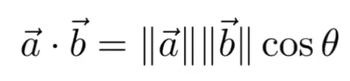
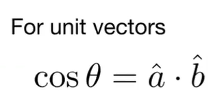
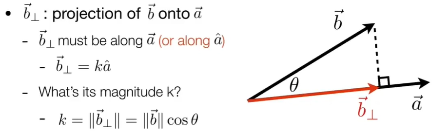
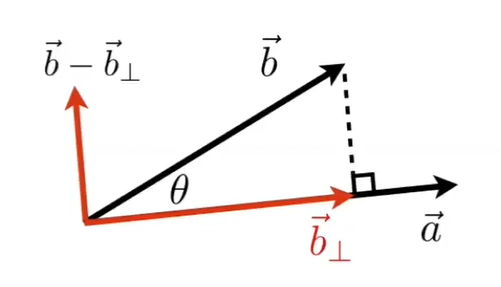
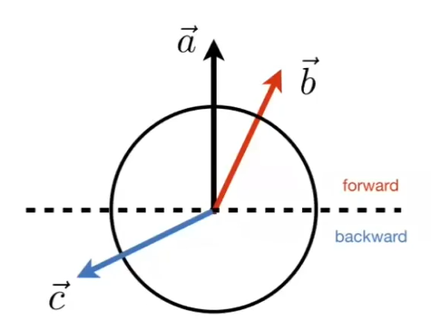
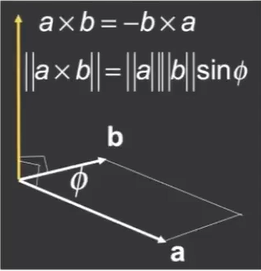
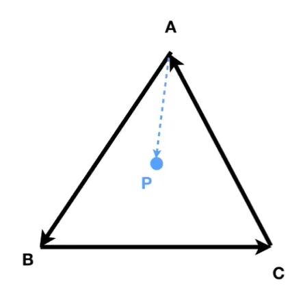

2022.01.29 修订
向量 Vector
点乘 Dot
求向量夹角的余弦值


可以用来求两向量夹角的余弦，向量点乘除以向量长度的积
求向量投影

可以用来求投影，b在a上投影长度就是b长度乘夹角的余弦。
如果a是单位向量，那么b在a上的投影，也就是b⊥可以写成：
b⊥=ka=∣∣b∣∣cosθa=∣∣a∣∣∣∣b∣∣cosθa=(a⋅b)a
如果a不是单位向量，那么可以先将它归一化后再带入公式：
b⊥=ka=(a⋅b)a=(∣∣a∣∣a⋅b)∣∣a∣∣a=∣∣a∣∣2(a⋅b)a
算出投影后，原向量再减去投影向量，就算出原向量分解后的两个向量

判断向量方向

点乘结果大于零，则两向量都指向前方，小于零则都指向后方。两向量越接近，点乘结果越接近1或-1
叉乘 Cross
- 以下都是右手坐标系
- 叉乘结果是：与两向量都垂直的向量，且与两向量所在平面垂直
- 不满足交换律
- 自己叉乘自己结果是0向量
- 判定左右。叉乘结果是正，在左侧；结果是负，在右侧
- 判断内外。AB与AP叉乘，BC与BP叉乘，CA与CP叉乘，若结果的长度都是正的或者负的，说明P在ABC围成图形的内部，否则只要有一个结果的长度与其他两个不一样，则P在ABC外部。
其他的

 p向量分解，u、v、w都是单位向量
p向量分解，u、v、w都是单位向量
矩阵 Matrix
乘法
如果A是一个m×n的矩阵，B是一个n×p的矩阵，那么两个矩阵乘积的结果AB是一个m×p的矩阵C。
矩阵C的第i行和第j个元素是由A的第i行与B的第j列点乘得到
也就是：
Cij=Ai⋅Bj
矩阵乘法满足不满足交换律，即AB=BA
矩阵乘法满足分配律和结合律
转置（Transpose）
其实就是把原向量的行和列互换

矩阵转置的性质：
(A+B)T=AT+BT
(cA)T=cAT
(AB)T=BTAT
(AT)T=A
(A−1)T=(AT)−1
单位矩阵（Identity）

主对角线元素都为1，其余元素都为0的矩阵叫做单位矩阵
100010001
一般来说，单位矩阵的符号是I
余子阵（Minor Matrix）
对于一个n×n的矩阵A，余子阵Aij就是原矩阵去掉第i行第j列的元素后，留下的(n−1)×(n−1)矩阵
A=A11A21A31A12A22A32A13A23A33
求余子阵A21
A=(A12A32A13A33)
行列式（Determinant）
定义：
det(A)=j=1∑nAij(−1)1+jdet(A1j)
根据公式，可以得出2x2矩阵的行列式：
det(A)=A11A22−A12A21
代数余子式（Cofactor）
对于一个n×n的矩阵A
Cij=(−1)i+jdet(Aij)
Cij称为元素Aij的代数余子式
如果把矩阵A中每个元素分别计算出代数余子式，再将结果放入对应位置，则将结果矩阵称为矩阵A的代数余子式矩阵
伴随矩阵（Adjoint）
如果将矩阵A的代数余子式矩阵再进行转置，就得到了矩阵A的伴随矩阵
\boldsymbol{A}^*=\boldsymbol{C}_\boldsymbol{A}^T
逆矩阵（Invert）
矩阵不存在除法运算，但是另外定义了一种矩阵乘法的逆运算
逆运算的结果称为逆矩阵，写作A−1
逆运算具有一些特性：
- 只有方阵才有逆运算
- 逆运算后的行列数量不变
- 不是所有方阵都可以进行逆运算，存在逆运算的矩阵称为可逆矩阵（invertible matrix），不能逆运算的矩阵称为奇异矩阵（singular matrix）
- 可逆矩阵的逆矩阵是唯一的
- 矩阵与它对应逆矩阵的乘积是单位矩阵
逆矩阵公式：
A−1=det(A)A∗
如果矩阵的逆等于矩阵的转置：
A−1=AT
那么这样的矩阵称为正交矩阵
和向量联动
 点乘写成矩阵
点乘写成矩阵 叉乘写成矩阵。A星号不是A乘b，A星号是dual matrix
叉乘写成矩阵。A星号不是A乘b，A星号是dual matrix